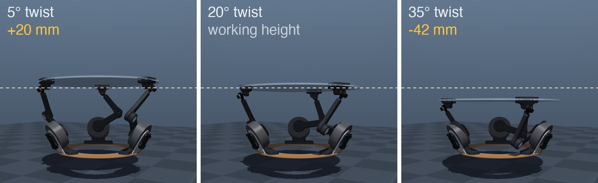
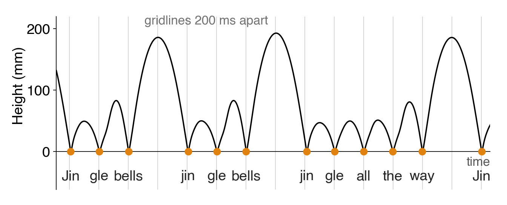

This is a three-motor platform that balances a ping-pong ball on a clear plate, rolls it around, and bounces it. Two cameras under the plate track the ball in 3D at 200 frames a second.
The robot is built and the software is written, but the controller has only run in simulation so far, and everything on this page is from the simulator. I’ll add photos and video of the real robot as I get them.
The robot started as my spherical wrist from 2023, which could only rotate about a point. I adapted it into a platform. Each motor now swings a crank, and a rod with a ball joint on top joins the crank to a round acrylic plate. The three motor axes still meet at one point above the base, as they did in the wrist.
Bir Parkash got it balancing a ball first, with one camera and a PD controller in Python, and has a write-up of that version. I wanted to see how far it could go with faster cameras and a model of the ball, so the vision and control here are new.
| Motors | Three EaglePower 8308s, direct drive, the same motor as in my haptic bow demo |
|---|---|
| Drives | moteus r4.11, on CAN from a Linux PC with a PEAK card |
| Plate | 6.35 mm clear acrylic |
| Cameras | Two Point Grey Dragonfly Express under the plate, each on its own FireWire bus, triggered together by a Nucleo board at 200 Hz |
| Ball | 40 mm ping-pong ball |
There are no homing switches. With the motors off, the plate drops until the cranks sit on the base with the elbows down, and I take that pose as the encoder zero.
Three motors give the plate three motions: roll, pitch and twist. It can’t move straight up and down, which is what bouncing a ball needs.
What it can do is twist. Turning all three cranks together twists the plate about the vertical, and the plate drops as it twists. With twist angle \(\psi\), the height follows
\[ z \approx z_0 - k\,\psi^2, \qquad k \approx 170\ \text{mm/rad}^2 . \]At \(\psi = 0\) the slope is zero, so a small twist does nothing. I run the plate at 20° of twist instead, where each degree moves it 2 mm. Twisting back raises the plate and twisting further lowers it, and that is the stroke that hits the ball. A strike at 0.8 m/s takes a twist rate of about 390°/s.

The twist isn’t free. A ball that lands off centre on a twisting plate gets dragged sideways a little, and the bounce planner has to allow for it.
The cameras sit under the plate and look up through it, so nothing above the plate gets in the way of the ball. The tracker is C++ on libdc1394 and OpenCV. In each image it finds the ball’s outline. Every outline pixel is a ray that just grazes the ball, so I fit the sphere that touches all the rays from both cameras. That gives the centre in 3D directly, and the fitted radius tells me when the two cameras have matched the wrong blobs.
The acrylic bends those rays. A ray crossing the plate at 30° comes out 1.2 mm to the side of where it went in, more at steeper angles, and the plate tilts while the robot runs. So the controller sends the tracker the plate’s tilt, and the tracker traces each ray through the acrylic before the fit.

I calibrate the pair with a ChArUco board, with the acrylic taken off.
A camera frame is about 6 ms old by the time the controller has it, and at 2 m/s the ball moves 12 mm in that time. A Kalman filter tracks the ball and predicts it forward to the present. It has a model for each thing the ball does: rolling on the plate, flying, and hitting the plate.
Two details are specific to this setup. A ping-pong ball is a hollow shell, so on a plate tilted by \(\theta\) it accelerates at \(\tfrac{3}{5}\,g\,\theta\), not the \(\tfrac{5}{7}\) of a solid ball. And stereo depth gets worse with the square of the distance. The cameras are close to the plate, so a ball 200 mm up is measured about five times less precisely than one resting on it, and the filter trusts each measurement accordingly.
Balancing is an LQR on the plate’s tilt. The first version oscillated, and the cause was the mechanism. The plate doesn’t tilt about its own surface: tilting it by 1° also slides the surface about 1.5 mm sideways under the ball, and a rolling hollow ball picks up 40% of that motion. The controller now works in a coordinate with that slide taken out, and the oscillation is gone.
The second version held the ball well but was twitchy, because camera noise went straight to the motors. I didn’t want that on real hardware. Now only the feedback is low-pass filtered, target moves are jerk-limited, and crank speed and acceleration are capped. In simulation it holds the ball to about 0.1 mm and recovers from 60 mm off centre in about a second.
Holding the plate up shouldn’t need stiff motor gains either, so the weight of the plate and legs is calibrated, with a method from my haptic wrist library. The plate moves through about 40 poses and approaches each one from both sides, so friction cancels, and a 22-parameter model of the weight is fitted to the motor torques. With that fed forward, gains as soft as 10 N·m/rad work.
Each impact is planned while the ball is in the air. From the predicted flight, the controller picks the plate’s tilt and stroke speed at impact so that the ball leaves at the right height and comes down on the target. The flight model includes air drag, which at 2 m/s is already 5% of gravity for a ping-pong ball. The controller measures how bouncy the ball is from its own impacts and corrects the height after every bounce. In simulation a 100 mm bounce stays within about 2.5 mm.
A ball that is in the air for a time \(T\) rises to
\[ h = \frac{g\,T^2}{8}, \]so the bounce height sets the time to the next impact. That makes each bounce a note: at a 200 ms beat a short note is a 49 mm hop, and a held note of 400 ms is a 196 mm one. The notes in the video are added at the moments the simulated ball hits the plate.

The flights never come out exactly as asked, so the controller keeps a running correction for each note length. Most impacts then land within about 5 ms of the beat. It also knows Twinkle Twinkle, Ode to Joy, Mary Had a Little Lamb, and Shave and a Haircut.
The simulator is MuJoCo. A script exports every body from my Fusion assembly and works out which link each one belongs to from the joints it touches, so the model is the real geometry. The controller is one C++ library, and the simulator and the robot’s runtime both call it, so what I test is the code that will run.
What worries me is everything I can’t measure well. So I run the controller on simulated robots that are each wrong in their own random way: camera calibration, encoder zeros, build errors of up to 1 mm, motor torque off by up to 15%, friction, extra mass on the plate, camera noise, delays, dropped frames, and how bouncy the ball is.
| Balancing | 32 of 32 robots; typically 2 mm from the target, 3.5 mm at worst |
|---|---|
| Bouncing, 200 mm | 32 of 32; height off by 7 mm typically, 16 mm at worst |
| Jingle Bells | Notes typically about 10 ms off the beat, and 7 of 32 robots lose the ball partway through |
The test has already found things. Cameras mounted 1 mm higher than the software thinks made the ball look as if it was inside the plate, and that put the songs 40 ms off the beat. A resting ball sits exactly one radius above the plate, so the controller now learns that error while the ball rests, before the first bounce.
The songs are still the fragile part. A ball that is less bouncy than I assumed is the worst case, since keeping the beat then takes more torque than the 2.5 N·m I allow the motors.
Next is the real robot: zero the encoders, calibrate the cameras, measure the delays, and run the gravity calibration. Then balancing, then bouncing, and then I’ll find out whether it can keep a beat.
The code is on GitHub: ball-balancing-robot.